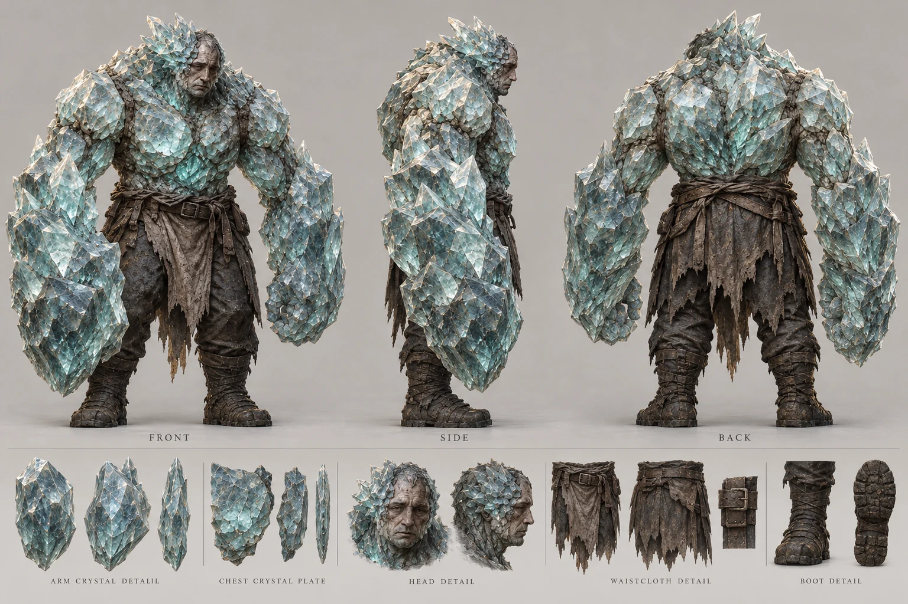

冥淵｜晶軀三視圖
沿用已完成的設定板：厚重人形、晶體拳臂、胸背晶板與承重腿腳。與晶爪並列為視覺原型，不定義進化關係。

點圖檢視完整尺寸。沿用已完成的設定板：厚重人形、晶體拳臂、胸背晶板與承重腿腳。與晶爪並列為視覺原型，不定義進化關係。完整製作規格與故事來源
WORLD-ART-20261012｜暮晶、暮鐘與冥淵美術設定
日期：2026-10-12。範圍：世界物件與生物設計文字；不修改劇情、戰鬥規則或 runtime 圖片。使用者所寫「幕晶」依現行故事正式名稱統一為「暮晶」。本規範補充角色美術設定集；國王額前裝置沿用既有 control-device 設定，不另造款式。
證據與標記
- C／故事確定：現行
src/js/story-chapters.js 後段有效覆寫及既有戰鬥資料。前段舊 F、G 章的停機工序不能覆蓋目前 H1、H2。 - V／既有畫面：下列實際 runtime 圖片可見的外形與材料；圖上未顯示的背面不能說成原作已確認。
- D／補充設計：為正側背、製作與跨圖一致性制定的相對比例、色票、背面與磨損安排。不是新劇情、機械原理、精密工程圖或遊戲數值。
所有色票都是 D 的中性光校色起點，並非逐像素採樣值；暖色照明與夜景可以改變感知色，不改材料身份。尺寸採相對人物尺度，不捏造正史公尺數。
暮晶｜材料、能源與狀態
故事鎖定
C：夜域退去後留下暮晶，能發光、儲能，用於照明、取暖和機械（story-chapters.js:2032）；暮晶由死在夜域裡的人慢慢長成（2103–2104、2321–2322）。高純度與死亡人數的關聯已有故事文本，但沒有訂立「某色即某純度」的規則。礦壁晶脈會發冷光（2265）。暮晶可用於裝置、盾上的晶片、硬幣中心嵌片及人体晶化；這些用途不代表四種不同元素。
C：H2 太陽分支的硬幣晶片先亮起並裂開，白光回縮，能量沿銅管倒灌（2418–2420）；夜襲分支瞄準操控室中央的核心晶石，不能拿硬幣取代核心（2436–2440）。結局伊芙掌中的樣本失去光澤、成為黑炭，維斯珀蘭所有暮晶熄滅（2449–2450）。結局黑炭不可畫成仍在穩定供能的青綠宝石。
外觀與三視圖
V：assets/story/props/archive-crystal.webp 是紫灰至近無色的透明尖柱礦簇，生於粗岩基底，柱體不等長，尖端多面。H1 控制室、武器鑲晶與人物晶化多呈青綠冷光；兩者屬既有畫面色域，不自行命名新品種。
D：設定板固定畫同一塊礦簇的正、側、背，底座同高、晶柱數量與折斷位置可對得上。主晶柱高約總高的四分之三，旁支不規則簇生；不可把背視圖重畫成另一塊完全對稱水晶。另畫掌心大小樣本與加工嵌片細節，清楚標示它們是不同用途的裁切形狀，不能假裝同一物件的轉面。主要讀形順序：尖端輪廓、厚薄折射面、暗色岩基、內部少量混濁與裂紋。
| 部位 | 材質與表面 | D 建議色票 |
|---|
| 原礦晶柱 | 半透明，硬切面；厚處混濁、邊缘較亮，非液體 | 紫灰 #827B8D、石英灰 #C2C6C3 |
| 啟動光 | 晶體內部亮、表面仍能辨面；微量照亮鄰物 | 青綠 #4ECAB8、淺冷白 #D7F7EC |
| 岩基 | 不透明顆粒、凹處積灰 | 暗褐灰 #49443E |
| 結局樣本 | 黑、失去透明度與光澤；保留碎裂晶面辨識 | 炭黑 #252623、灰邊 #575950 |
狀態對照與禁混用
| 狀態 | 允許的畫面 | 禁止誤讀 |
|---|
| 礦簇／研究樣本 | 透明至混濁切面；可見冷光或受環境光 | 不以未發光就判定死亡、耗盡或低純度 |
| 已裝入器物 | 形狀依既定槍、盾、硬幣、額環的晶槽 | 不發明第二套武器，不把所有鑲晶都換成同形大柱 |
| 倒灌瞬間 | 強白光、晶片裂紋、管線亮起；是特定 H2 狀態 | 不把爆發當永久待機效果 |
| H2 結局 | 黑炭、光澤消失、不發內光 | 不加持續青綠核心、未來復甦或自動再充能暗示 |
既有 h2-crystal-charcoal.webp 仍帶淡青白煙／高光，可作構圖和碎塊輪廓參考；新的「熄滅後」設定以 C 文本為準，畫成完全不發內光。原圖中手套與遠景不納入暮晶本體定義。
暮鐘｜地表巨鐘與地下操控系統
故事鎖定與層級
C：暮鐘位於暮城中央，鐘響後逼近的夜域退去（2033）；真相是夜域被送往別處，不是消滅（2346、2509）。鐘樓地下有操控室；粗銅管沿牆上行，中央主閥有王室紋章（2331、2337）。朔與格蘭轉動主閥、齒輪卡住，但能量經另一條線路繼續走（2339–2341）。國王額前發光暮晶裝置以能量連上暮鐘（2123、2342）。核心晶石在操控室中央，每根銅管都連向它（2436）。
D：設定板把「地表巨鐘」「地下主閥」「中央核心」「另一供能路徑」「額環關聯」分開標示，僅表達故事空間關係。另一線路可標「另一路供能／備援示意」，但不可把舊稿的特定拆裝、遠端線路路由、閥值或負載條件補為現行正史。核心與主閥均在中央區域，不畫成同一金屬物件；可用分層剖示讓兩者讀得清楚，不宣稱剖面為實際施工布局。
外觀主檔與相對尺度
V：assets/story/illustrations/chapters/prologue-bell-prayer.webp：巨型古銅鐘、上窄下寬厚鐘唇，環帶浮雕、圓形幾何徽紋，哥德石造立柱與深綠金紋旗。人可立於鐘下的平台；鐘的口徑明顯大於成人身高。整體是沉重的鐘，不是現代鐘錶盤。
V：assets/story/backgrounds/h1-control-room/royal-control-h1.webp：巨大輪式主閥、中央王室盾徽、銅管鉚接套環、齒輪、青綠長窗、濕黑石牆、上層金屬走廊與維修門。閥輪高過成人；操作空間足以兩名成人一起施力。主要觀看方向為正面中央閥輪，右側樓梯與高層走道。
D／正面：巨鐘正投影保留鐘肩、環帶、紋章及厚唇；旁放成人比例剪影。主閥另設正投影，王室徽章置輪心，握把和法蘭保持同一輪廓。
D／側面：巨鐘呈厚壁、內部鐘舌與上方懸掛件；吊件只作外形補設計，不繪承重算式。主閥側視圖呈輪、短軸、管道、石座前後層次，不能把側面畫成第二只正面輪。
D／背面：巨鐘延續同一圈浮雕環帶，背面局部氧化；主閥後方由粗銅管接向中央系統，用留白或虚線標示未確認區。外鐘背面不新增另一組祭壇或神像。
| 部件 | 固定材料語言 | D 建議色票與磨損 |
|---|
| 鐘身／主閥 | 厚鑄銅與青銅、較亮磨擦邊、暗凹雕紋 | 古銅 #8C633B、暗銅 #49392D、少量銅綠 #45665D |
| 管道／法蘭 | 厚銅管、鉚釘、接縫，避免塑料軟管 | 銅褐 #80543D，接縫暗灰 |
| 支架／走廊 | 黑鐵和石造承台 | 鐵灰 #353D3B、濕石 #333A3B |
| 核心／觀察窗 | 暮晶青綠冷光，仍保留晶面或窗厚度 | #4ECAB8、亮部 #D7F7EC |
| 旗與徽記 | 深綠織布、古金刺繡；沿用已出現王室圖形 | 深綠 #172E29、古金 #B29256 |
關聯與狀態
D：額環只放小型關聯圖，沿用國王設定集那一圈銅環與額晶。以細標線註「能量連結」，不可畫實體電纜直接插入國王頭部，也不可把他頭上畫成整座鐘的控制台。
| 劇情狀態 | 外觀必須呈現 | 不可提前出現 |
|---|
| 日常祈禱／序章 | 巨鐘完整、儀式空間、重金屬與石材 | H2 的光柱、破裂塔體 |
| H1 主閥已關 | 閥輪位置已操作，另路供能仍可見 | 整座系統完全熄滅、已毀的核心 |
| H2 倒灌 | 管線接續亮起、核心／晶片相應爆發 | 假定兩條分支同時發生的硬幣＋核心雙重射擊 |
| H2 毀滅 | 光而非第二次鐘聲；由塔中衝天、震盪擴散 | 安全停機、城市整體消失 |
| 結局之後 | 鐘樓已不在；暮晶熄滅 | 完整仍運作的鐘樓、新一次鐘響 |
毀滅時刻參考 assets/story/illustrations/chapters/h2-bell-explosion.webp；它不是結局後的靜態建築正視圖。故事依據為 2445–2450。
冥淵｜被暮晶侵蝕的人
身份及共通材料
C：納爾瓦描述其走路像人、身上一半已成晶體（2273）；實驗紀錄明說用暮晶侵蝕活物，冥淵是失敗的那些人（2306–2307）。因此必留人類結構與受損衣物。不能畫成天然石元素、盔甲空殼、獨立水晶種族或無人類過去的怪獸。
V：戰鬥圖像分 enemy-abyss-claw.webp 與 enemy-abyss-body.webp，名稱為「晶爪」「晶軀」。不是早期、晚期或必然進化階段；也不新增智慧、社會階級、感染傳播機制、晶體弱點或戰鬥技能。
兩類共用半透明冷青晶面、灰白皮膚、深灰褐破布、暗亂頭髮、沾塵布帶與裸露的人類關節。內光只輔助讀形；不要把眼睛、嘴、全身縫隙都畫成霓虹燈。D 校色：晶體 #91C4BE／冷白邊 #DAEAE2，深處 #35645F，灰皮 #868A83，破布 #403D35。
晶爪三視圖
V：偏瘦人形、亂黑髮、仍可辨識的灰白人臉；肩、胸、前臂與手指晶化，手指延伸成長彎晶爪，仍辨肘與腕。深色破衣、纖細腰部與腿部形成負空間。
D／正面：固定瘦長比例、雙臂長爪與人脸露出區。雙腳站在同基線；不為強化怪物感而加第三手或反關節。
D／側面：保留前傾頸、薄胸、肘彎、爪向前下方的曲線；爪是肢體變異，沒有可卸手套袖口。
D／背面：肩胛晶刺從衣料破口延伸；背後仍有脊背的人形結構，碎布與正面腰帶接得上。背面晶簇分布是補設計，不另造第二張臉。
D／尺度：總體仍以成人體格為基礎；瘦削與長爪造成威脅，不把它放大到獅鷲大小。三視圖固定同一站姿高度，戰鬥蹲姿另畫小圖，不用蹲姿直接比較身高。
晶軀三視圖
V：厚重、寬肩、巨大晶體前臂與拳，胸背與肩頭塊狀晶板；灰白的成人男性面部仍露出，深褐破布繫在腰部，腿與腳承受重量。不是全身穿透明鎧甲的人。
D／正面：雙肩形成厚重輪廓，胸中央留出層疊晶面，臉不可被封成無臉水晶頭盔。拳頭大於晶爪型手掌，但不裝人造錘子。
D／側面：厚胸與前傾重量清楚，拳臂的塊狀晶體比晶爪型短而厚；保留肘、膝與踝位置，不增加昆蟲腿。
D／背面：厚晶板沿肩背生長但仍跟隨人形肩胛；腰部破布、布繩與腿部接續正面。背面尖角数量與輪廓在所有轉面一致。
D／尺度：同頁參考成人可見較寬重的軀幹，不指定故事未給的身高差。晶爪／晶軀並列要使用同一比例尺，禁止靠各自裁切大小誤導體型。
狀態與禁混用
- C 戰敗後晶體像碎玻璃散落（2283）；可畫斷晶與碎片，不能自行增加爆炸、石像封印或人形復原。
- 晶爪和晶軀各是一份可重用視覺原型，沒有已確認的個體本名。無需替每個戰鬥複製品新增身份故事。
- 凜右臂晶化、國王晶化、晶化狼鼠與獅鷲沿用各自設定；不能因材質相同就改成冥淵，也不能將凜整張臉套成冥淵模板。
- 衣物以原圖的破布與布帶為主；不得自行配王室制服、尺烏徽章或新的實驗編號，除非具體場景有來源。
本輪交付與驗收邊界
本檔完成 C／V／D 的定義、三視圖要求、材質色票、相對尺度、狀態與禁混用規則。素材主責另交暮晶與暮鐘設定板；冥淵沿用設定集既有晶爪、晶軀三視圖。所有板圖仍需產品檢查與本規範一致，不能把本文完成當成 runtime 全圖已更新。現行引用與素材容量由整合者驗收；本檔不聲稱全分支畫面已逐張驗證。